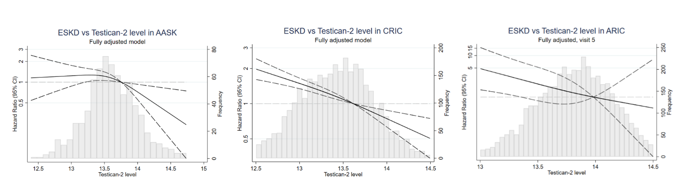

Testican-2 as a Protective Marker for Incident ESKD
Some backgrounds?
Testican-2 was recently identified as a podocyte-derived protein that is released into circulation by the kidneys and is positively correlated with estimated glomerular filtration rate (eGFR) and eGFR slope. However, whether testican-2 levels are associated with protection from end stage kidney disease (ESKD) is unknown.
What data did we use?
We performed the analyses on three cohorts: ARIC (the Atherosclerosis Risk in Communities Study), AASK (African American Study of Kidney Disease and Hypertension) and CRIC (Chronic Renal Insufficiency Cohort). We constructed cox proportional hazards model to study the associations of testican-2 with adverse kidney outcomes for each cohorts seperately, then conducted a meta analysis across the three cohorts.
What statistical models did we use to address this problem?
We used descriptive statistics, including means and proportions to compare baseline characteristics by serum testican-2 tertile. Formal testing was performed using student’s t-test or Wilcoxon rank-sum test for continuous variables and chi-squared for categorical variables. Cox proportional hazards models were constructed to study the associations of testican-2 with: 1) incident ESKD; and 2) CKD progression. We adjusted for the covariates using three different models. Model 1 was adjusted for age, sex, and race. Model 2 was additionally adjusted for GFR, heart disease, smoking, systolic blood pressure, BMI, and diabetes. Model 3 was additionally adjusted for either log PCR in AASK and CRIC or log ACR in AASK. To evaluate for non-linear relationships, we also investigated the fully adjusted association between testican-2 and ESKD modeling testican-2 with cubic splines. Finally, we performed a meta-analysis of the association of testican-2 with incident ESKD and CKD progression across AASK, the CRIC study, and the ARIC study using the ‘meta’ package in R (version 4.0.3). A P-value <0.05 was considered significant.
What did we find?

We found that higher testican-2 levels were associated with higher measured GFR (mGFR) in AASK, higher eGFR in the CRIC and ARIC studies, and lower albuminuria in all cohorts. Baseline testican-2 levels were significantly associated with incident ESKD in Cox proportional hazards models adjusted for age and sex (Model 1); Model 1 + mGFR or eGFR + comorbidities (Model 2); and Model 2 + proteinuria (Model 3). In Model 3, the associations between testican-2 (per log2 increase) and incident ESKD were: AASK (HR = 0.61 [0.41, 0.93], P = 0.020), CRIC (HR = 0.78 [0.70, 0.99], P = 0.048), ARIC (HR = 0.22 [0.07, 0.66], P = 0.006), and meta-analysis (HR = 0.74 [0.65, 0.91], P = 0.0020).